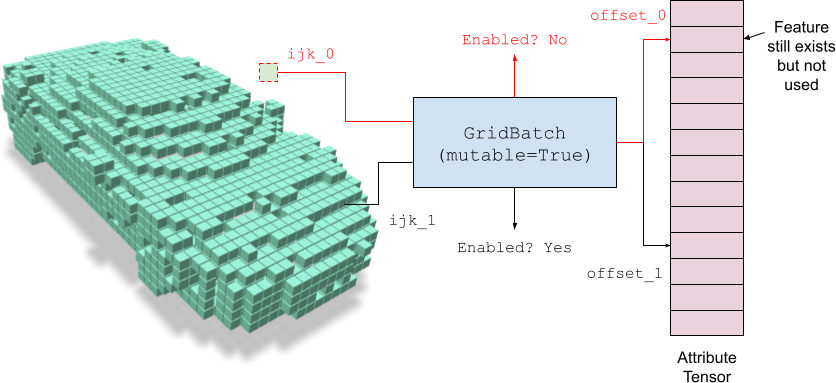
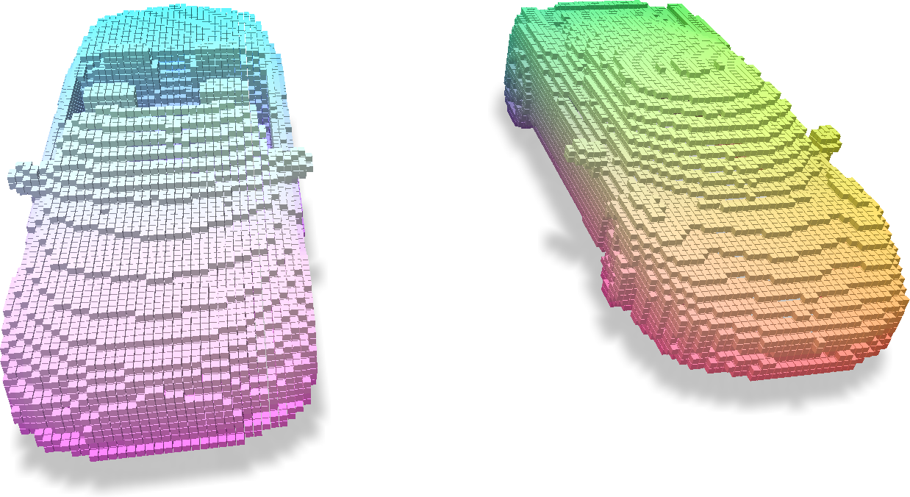
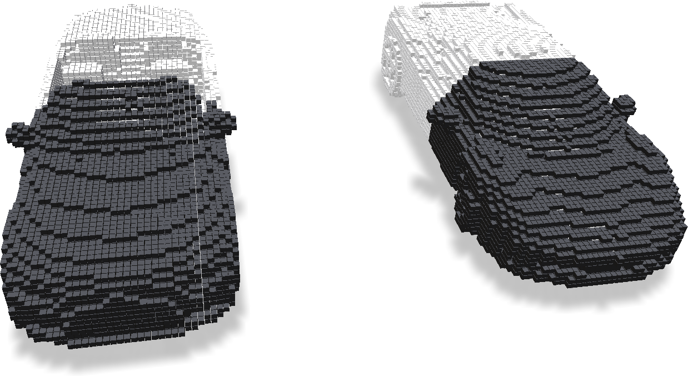
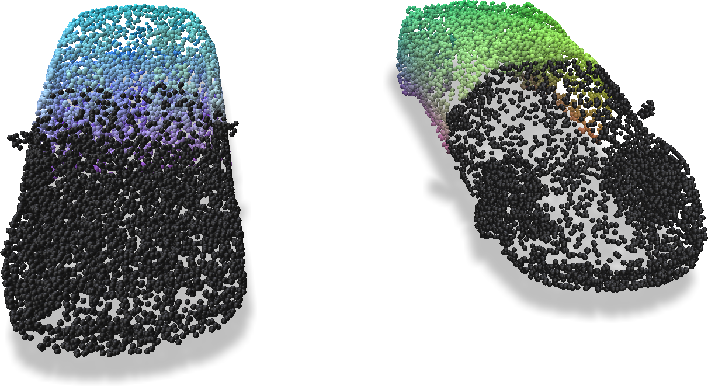
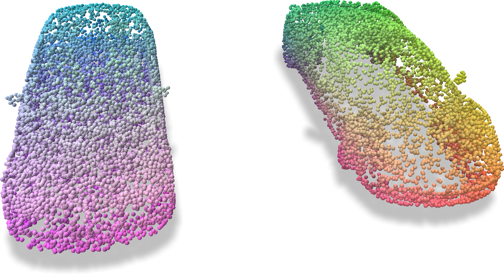
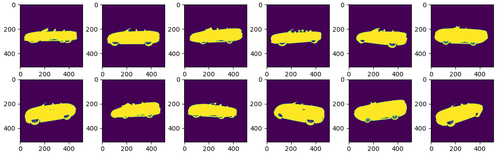
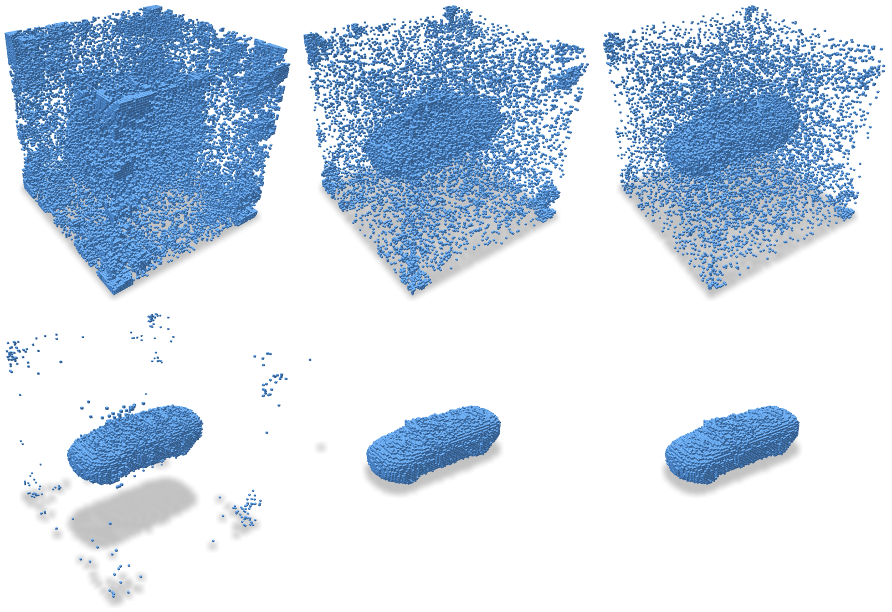

Mutable Grids
Concepts
Mutable grids refer to GridBatch whose voxels can be turned ‘off’.
Each voxel hence not only stores an integer offset that indexes into the external feature array, but also includes a bit switch indicating whether the voxel exist or not.

The ability to turn on (enable) voxels and turn off (disable) voxels make it easier for downstream tasks such as structural optimization and neural rendering. Note that even if you disable some voxels, the corresponding entry in the feature array still exists. Such a design keeps the feature unchanged while changing the grid topology in a flexible way.
Examples
Basic example
Mutable grids can be created by adding mutable=True arguments into the grid building function.
For example:
import fvdb
from fvdb.utils.examples import load_car_1_mesh, load_car_2_mesh
v1, f1 = load_car_1_mesh(mode = "vf")
v2, f2 = load_car_2_mesh(mode = "vf")
mesh_v_jagged = fvdb.JaggedTensor([v1, v2])
mesh_f_jagged = fvdb.JaggedTensor([f1, f2]).int()
# Create mutable grid
grid = fvdb.gridbatch_from_mesh(
mesh_v_jagged, mesh_f_jagged,
voxel_sizes=[0.01] * 3, origins=[0.0] * 3,
mutable=True
)
# Create additional features for visualization purpose
feature = grid.grid_to_world(grid.ijk.float())
feature.jdata = (feature.jdata - feature.jdata.min(dim=0).values) / \
(feature.jdata.max(dim=0).values - feature.jdata.min(dim=0).values)

Voxels can be disabled in batches via disable_ijk:
# Get the IJK coordinates to be disabled
disable_ijk: fvdb.JaggedTensor = grid.ijk.rmask(feature.jdata[:, 0] > 0.5)
# Disable them!
grid.disable_ijk(disable_ijk)
Once disabled, those voxels will virtually disappear, meaning that all subsequent grid operations such as sampling, splatting, or ray marching, will treat those voxels as they do not exist. One can visualize the enable mask via:
enabled_mask = grid.enabled_mask

Note that in the above figure, white voxels are those still enabled, while black voxels are disabled voxels. To verify, we try to sample features from the grid to a set of sampled points:
pts_feature = grid.sample_trilinear(mesh_v_jagged, feature)

Because the disabled voxels will be treated as non-existing, no voxels will contribute to the features on the points at the front. Hence those points are marked as black (i.e. feature = 0).
The disabled voxels could be revived at any time using enable_ijk:
grid.enable_ijk(disable_ijk)
Conducting the same feature sampling with sample_trilinear, one can get the full features being correctly sampled.

Structure optimization
In this example, we will cover a more advanced topic to perform structure optimization from images. Suppose we have the following observations of a single object’s mask:

The task is to recover the underlying 3D shape from the images. Here we use the underlying representation of our VDB grid. Such a problem could be solved in many different ways, with one obvious one being space culling. However, to demonstrate the wide applicability and flexibility of fVDB, we will take the differentiable rendering approach here. Each voxel is hereby given an opacity value, and the entire sparse grid is volume rendered into a predicted mask. A simple L1 loss is compared between the given ground-truth mask and the predicted mask to force them align.
To begin, we create a mutable grid and the corresponding opacity (alpha) by:
import fvdb
import torch
import math
init_resolution = 96
# Suppose our shape lies within the unit bounding box from [-0.5, 0.5, 0.5] to [0.5, 0.5, 0.5]
grid = fvdb.gridbatch_from_dense(
num_grids=1, dense_dims=[init_resolution] * 3,
voxel_sizes=[1.0 / (init_resolution - 1)] * 3, origins=[-0.5, -0.5, -0.5],
device="cuda",
mutable=True
)
def inv_sigmoid(x) -> float:
return -math.log(1 / x - 1)
alpha = torch.full((grid.total_voxels, ), inv_sigmoid(0.1), device=grid.device, requires_grad=True)
The structure optimization is done via torch’s Adam optimizer, with the loop being:
optimizer = torch.optim.Adam([alpha], lr=1.0)
# Optimization loop
for it in range(100):
# Subsample rays from the given camera poses.
sub_inds = torch.randint(0, ray_orig.shape[0], (10000, ), device=grid.device)
pd_opacity = render_opacity(
grid, torch.sigmoid(alpha),
ray_orig=ray_orig[sub_inds], ray_dir=ray_dir[sub_inds]
)
gt_opacity = ray_opacity[sub_inds]
# Compute L1 loss
loss = torch.mean(torch.abs(pd_opacity - gt_opacity))
optimizer.zero_grad()
loss.backward()
optimizer.step()
Here render_opacity is an approximate differentiable rendering algorithm like:
pack_info, voxel_inds, out_times = grid.voxels_along_rays(ray_orig, ray_dir, 128, 0.0)
voxel_inds = grid.ijk_to_index(voxel_inds).jdata
rgb, depth, opacity, _, _ = fvdb.utils.volume_render(
sigmas=-torch.log(1 - feature[voxel_inds]),
rgbs=torch.ones((voxel_inds.shape[0], 1), device=grid.device),
deltaTs=torch.ones(voxel_inds.shape[0], device=grid.device),
ts=out_times.jdata.mean(1),
packInfo=pack_info.jdata, transmittanceThresh=0.0
)
During the optimization, the voxels of the grid could be disabled or enabled freely. In this example, we demonstrate the following strategy similar to Instant-NGP.
if it > 0 and it % 5 == 0:
# Disable voxels that are transparent
bad_mask = torch.sigmoid(alpha) < 0.1
grid.disable_ijk(grid.ijk.rmask(bad_mask))
# Randomly revive voxels at the beginning.
if it < 20:
enable_mask = torch.rand(grid.total_voxels, device=grid.device) < 0.01
grid.enable_ijk(grid.ijk.rmask(enable_mask))
Note that a way simpler strategy that only turns voxels off at a much sparse internal also works in this very simplified scenario. The snippet above is solely for demonstration purpose of our API.
The optimization procedure looks as follows. One can see that we are able to recover the ground-truth voxel structure of the provided car.

A full runnable example could be found at examples/structure_optimization.py.